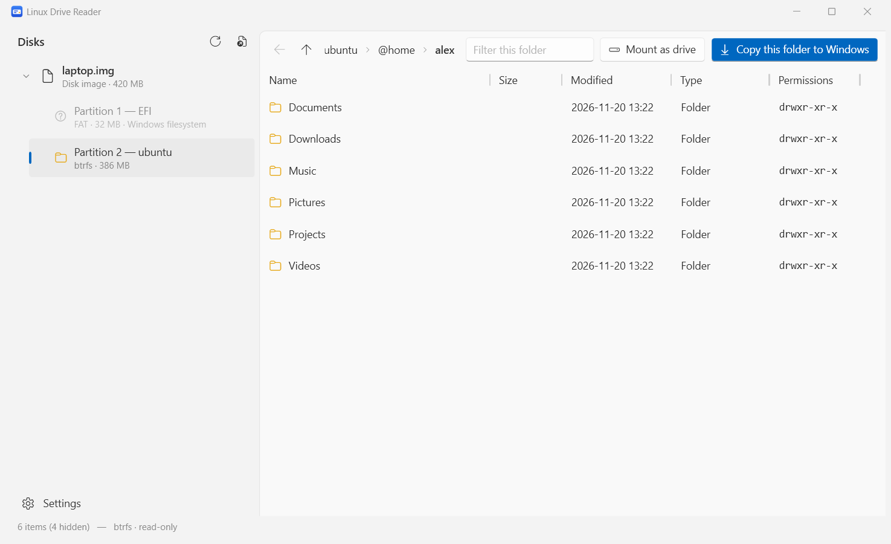
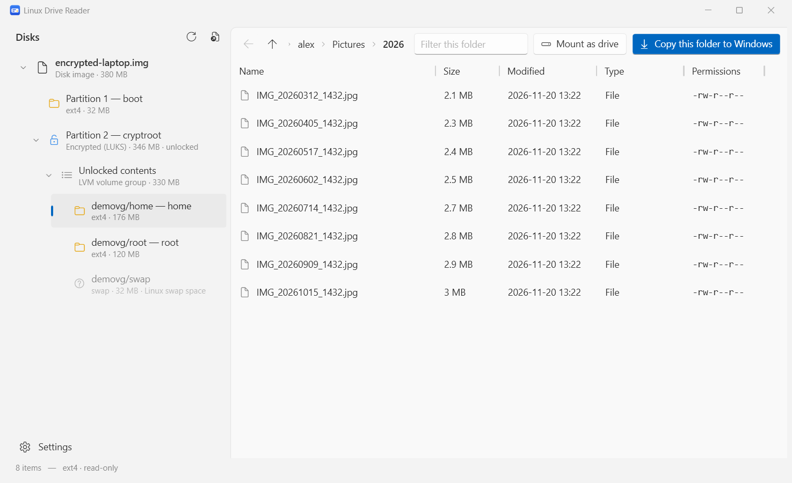
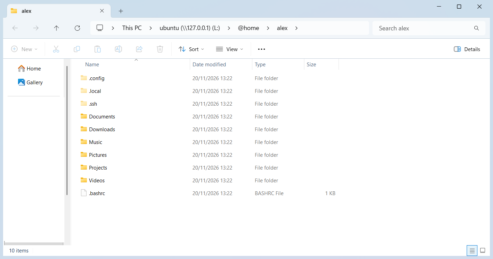

Open your Linux disk on Windows.
Linux Drive Reader is a Windows program for disks formatted by Linux: ext4, btrfs and xfs, including ones encrypted with LUKS or split up with LVM. Plug the disk in, pick a partition, and browse it. Copy files off, or give the partition a drive letter so every other program can open it too.
It only ever reads. Nothing is written to your disk.

@home/alex on a btrfs partition taken out of an Ubuntu laptop.The installer can put it in Program Files for everyone, or in your own folder without administrator rights. There is also a portable exe and SHA-256 checksums on the release page.
About the warning: the program isn’t code-signed yet, so Windows shows “Windows protected your PC” the first time. Click More info, then Run anyway. The full source is on GitHub, and every release is built there from it.
What it reads
| ext2, ext3, ext4 | All current layouts, including inline data, bigalloc and 64-bit volumes. |
|---|---|
| btrfs | Subvolumes and snapshots, zstd, LZO and zlib compression. Every file is checked against its stored checksum, so a corrupted file is reported instead of quietly copied. |
| xfs | The current v5 format and the older v4. |
| LUKS 1 and 2 | Unlocked with your password. AES only, which is what every distribution uses by default. |
| LVM | Logical volumes, as long as they sit on one disk. |
| Partitions | GPT, MBR including logical partitions, or a filesystem written straight onto the disk. |
| Disk images | Raw .img and .dd files. These don’t need administrator rights. |
Not yet: f2fs, ZFS, btrfs or LVM spread across several disks, and writing. Anything it can’t open is still recognised and named, so you know what you’re dealing with.
demovg
root · ext4home · ext4swapThe usual “encrypt the whole disk” install, as Ubuntu and Fedora set it up. Each layer is opened in turn and the volumes inside appear in the list.


How it works
Windows can’t read Linux filesystems, and the usual ways around that are a virtual machine (WSL), or a kernel driver for each filesystem. This program does neither. The readers for ext4, btrfs and xfs, the LUKS decryption (including the Argon2 password hashing) and the zstd and LZO decompressors are written into the app itself, so it runs like any other program and needs nothing else installed.
The drive letter needed a trick. Only a driver can add a real disk to Windows, so instead the app runs a
small read-only file server that only this computer can reach, at 127.0.0.1, and asks Windows’
own file-sharing client to connect to it. Explorer sees an ordinary network drive. Connecting on a private
port like this became possible in Windows 11 version 24H2, which is why mounting needs that version.
Reading a disk directly is something Windows only allows administrators to do, so the app asks for those rights when you want to open a physical disk. Disk image files work without them.
Good to know
- If Linux was shut down uncleanly (a crash, a pulled plug), the app says so. The last changes before the crash may not show.
- Linux file names that Windows doesn’t allow, like
notes:draft?, are renamed when copied, and you get a list of every change. Existing files are never overwritten. - Symbolic links are followed when browsing and on the drive letter. Device files and sockets are left out.
- Passwords for encrypted disks are kept in memory only while the app runs.
Releases
1.0.0 · 20 November 2026 · First release. All releases
Found a disk it can’t read, or a bug? Open an issue and say what the app shows for that partition.